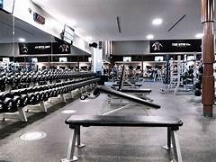

Gimnasio
Adentrándome en el mundo del gimnasio, descubro una disciplina que va más allá de la simple actividad física; es un compromiso con el automejoramiento y la salud. Levantar pesas se convierte en un viaje personal de fortaleza, resistencia y superación. Cada repetición no solo es un desafío físico, sino también una oportunidad de crecimiento mental.
Fútbol
El fútbol, conocido como el deporte rey, se ha convertido en más que una simple actividad para mí; es una pasión que impulsa mi energía y despierta mi espíritu competitivo. Desde el momento en que el balón toca la cancha, experimento una mezcla de emoción y determinación. La estrategia, la coordinación y el trabajo en equipo son elementos clave que me fascinan del juego. Ya sea animando a mi equipo favorito en el estadio o participando activamente en partidos con amigos, el fútbol es una fuente inagotable de alegría.